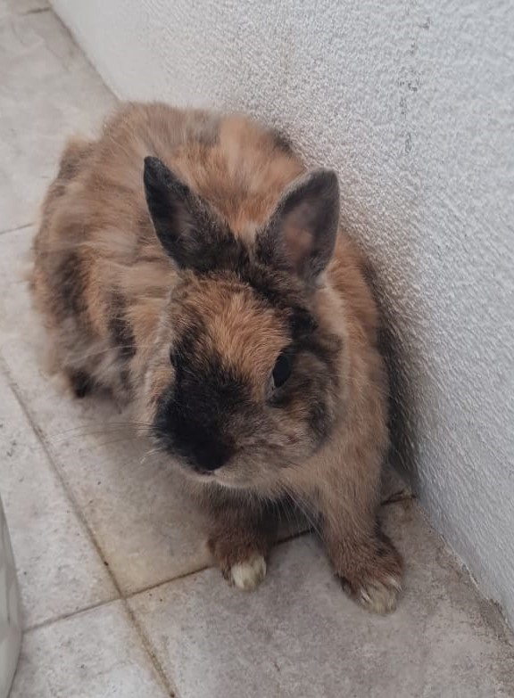

La WEB de BERTA by Fernando Pernia Lobo
¿Quien soy?
Me llamo Berta y soy una coneja muy simpatica. Tengo 4 años que para mi es como si tuviera 40 años de un humano.
Me paso todo el dia comiendo y tumbada en mi jaula. Tengo un terraza grande para poder correr cuando me apetece.

Lo que mas me gusta
- Dormir y comer pienso
- Entrar en casa y tumbarme en el sofa
- Que me rasque la panza>
Lo que menos me gusta
- Ir al venterinario
- Que me cepillen
- Que me pongan vacunas
Enlace a mi Veterinario
Clinica Veterinaria Romareda
Formulario de Alta en la Clinica
Tipo de Heno que me gusta segun Epoca del Año y Horas de Dia
| CALOR | FRIO |
|---|
| Mañana | Diente de León | Heno de los Alpes |
| Tarde | Diente de León | Heno de los Alpes |
| Noche | Calendula |